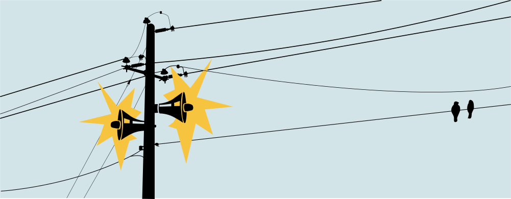

News

2025
- Marino Miculan visits PLS Dec 8-10, 2025. Host: Marco Carbone
- Marco Carbone gives his inaugural lecture Friday Sept 19, at 15 in Aud 2 at ITU.
- Maria Bendix Mikkelsen starts as a PhD Student September 2025. Supervisor: Marco Carbone
- Ohad Kammar (University of Edinburgh) visits PLS in September 2025. Host: Rasmus Møgelberg
- Takafumi Saikawa (Nagoya University) visits PLS in September 2025. Host: Alessandro Bruni
- Sergei Stepanenko starts as a postdoc September 2025, working with Rasmus Møgelberg and Patrick Bahr. The postdoc is funded by DFF.
- The Copenhagen Programming Language Workshop (CoPLaWS 2025) takes place at Aalborg University Copenhagen, August 22.
- Alistair Sirman and Joshua Smart (University of Southampton) visit PLS in August 2025 sponsored by the DDSA travel grant. Host: Alessandro Bruni
- The Independent Research Fund Denmark funds the project Probabilistic Session Types (PROBABILIST), 2025-2029. The project will fund one PhD student for 3 years. PI: Marco Carbone
- Alessandro Bruni visits Reynald Affeldt at AIST, Tokyo, March - May 2025, and Ekaterina Komendantskaya at University of Southampton. Sponsored by the Carlsberg Foundation project VeriFunAI (Verified Functional Analysis for Safe AI).
- Lyes Saadi (ENS Paris-Saclay) visits as intern Feb - July 2025. Host: Rasmus Møgelberg
- Dawit Tirore successfully defended his PhD Dec 12, 2024
2024
- Marino Miculan (University of Udine) visits December 9-12. Host: Marco Carbone
- The Independent Research Fund Denmark funds the project Probabilistic Session Types (PROBABILIST), 2025-2029. The project will fund one PhD student for 3 years. PI: Marco Carbone
- Nobuko Yoshida (University of Oxford) visits December 7-22. Host: Marco Carbone
- Nobuko Yoshida (University of Oxford) visits November 13-17. Host: Marco Carbone